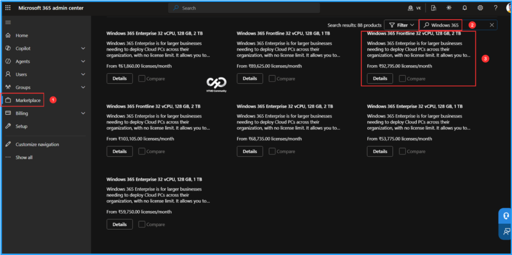
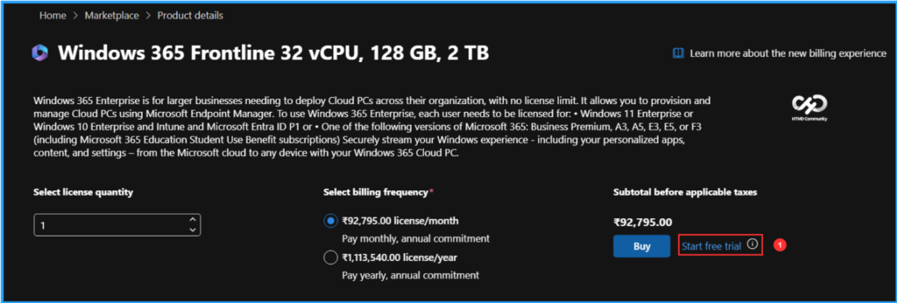
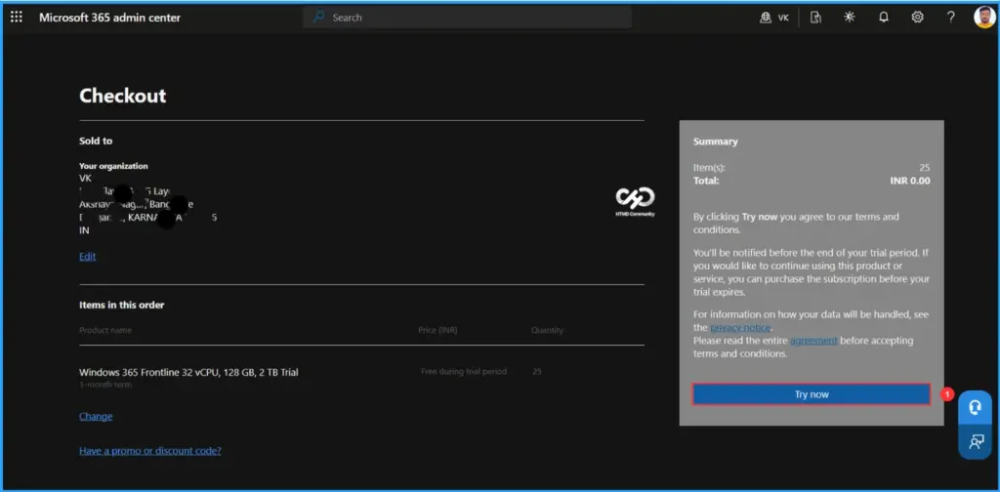
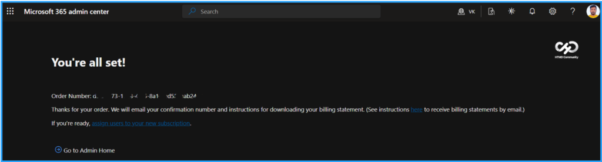
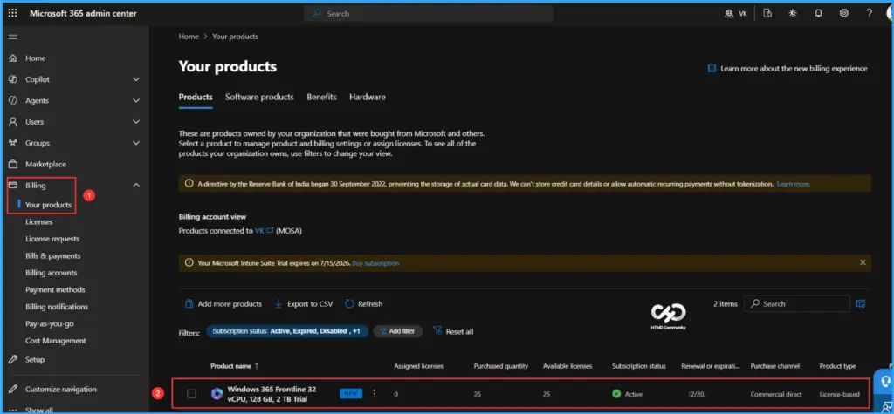
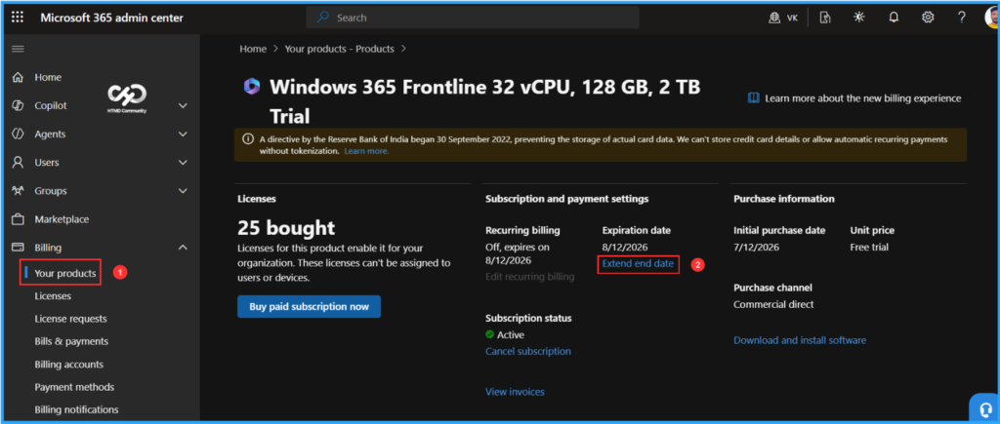
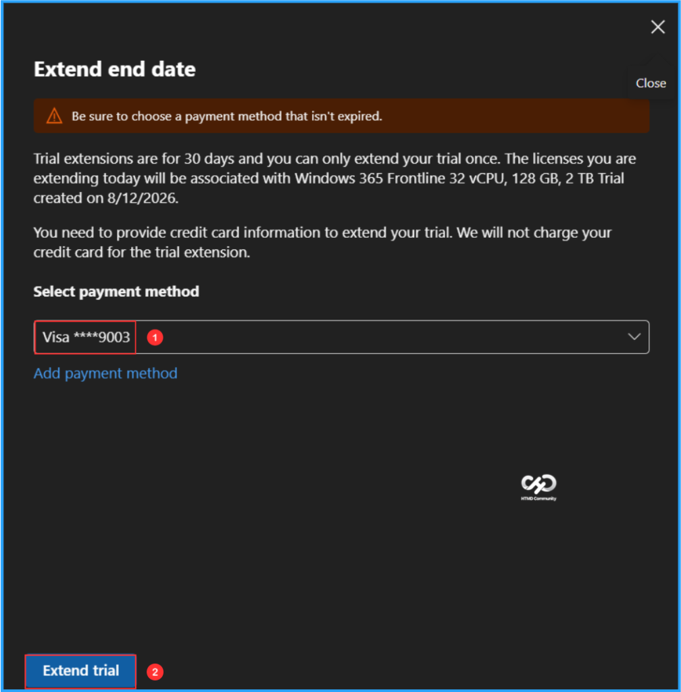

Key Takeaways
- Learn how to obtain a Windows 365 Flex free trial license for a high-performance 32 vCPU, 128 GB RAM, 2 TB Storage Cloud PCs.
- Understand the prerequisites and licensing requirements before starting the trial.
- Follow a step-by-step process to purchase and activate the free trial in the Microsoft 365 admin center.
- Start evaluating high-performance Windows 365 Flex Cloud PCs for demanding workloads without an upfront licensing cost.
In this article, I will explain how to purchase a Windows 365 Flex High Performance Cloud PC Free Trial License. Microsoft now offers a Windows 365 Flex 32 vCPU, 128 GB RAM, 2 TB Storage Cloud PCs free trial, giving organisations an excellent opportunity to evaluate one of the most powerful Cloud PC configurations available. The trial includes 25 licenses for 30 days, making it ideal for testing high-performance workloads, validating deployment scenarios, and exploring Windows 365 Frontline capabilities before making a purchasing decision.
Table of Content
Microsoft Entra RBAC Roles To Purchase or Assign Microsoft 365 Licenses
To purchase or assign Microsoft 365 licenses in the Microsoft 365 admin center, the user must have one of the following Microsoft Entra RBAC roles. If you’re using a Microsoft Customer Agreement (MCA) or purchasing through a Cloud Solution Provider (CSP), the process and required permissions may differ. For example, CSP-managed tenants typically require the partner to provision or purchase licenses on your behalf.
| RBAC Role | Details |
|---|---|
| Global Administrator | Full administrative access, including purchasing, assigning, and managing licenses. This is the most common role used. |
| Billing Administrator | Can purchase subscriptions, manage billing, and buy additional licenses. This role is sufficient if the primary task is purchasing licenses. |
| License Administrator | Can assign, remove, and manage licenses for users, but cannot purchase new licenses. |
How to Purchase a Free Trial of Windows 365 Flex High Performance Cloud PCs
To Purchase a Free Trial of Windows 365 Flex High Performance Cloud PCs. First, log in to the Microsoft 365 Admin Center using your administrator credentials.
- Navigate to Home > Marketplace.
- Click on the Filter option to explore all product categories.
- Type Windows 365 in the search bar and press Enter.
- Scroll down to the Windows 365 category. There, you will find the license for Windows 365 Frontline with 32 vCPUs, 128 GB of RAM, and 2 TB of Storage.

When you click on Details, you will be taken to the Product details page. Here, you will find the Start Free Trial option. If you click on the information (i) button next to it, you will see a message that says, This trial includes 25 licenses for 1 month. To begin, click on Start Free Trial.
Note: Windows 365 Enterprise is for larger businesses needing to deploy Cloud PCs across their organization, with no license limit. It allows you to provision and manage Cloud PCs using Microsoft Endpoint Manager. To use Windows 365 Enterprise, each user needs to be licensed for: • Windows 11 Enterprise or Windows 10 Enterprise and Intune and Microsoft Entra ID P1 or • One of the following versions of Microsoft 365: Business Premium, A3, A5, E3, E5, or F3 (including Microsoft 365 Education Student Use Benefit subscriptions) Securely stream your Windows experience – including your personalized apps, content, and settings – from the Microsoft cloud to any device with your Windows 365 Cloud PC.

On the Checkout page, you will find the following sections: Organization, Items in This Order, and Summary. You can click on the Try Now option from this page. You will receive a notification before your trial period ends. If you wish to continue using the product or service, please purchase the subscription before the trial expires.

It will process the license purchase in a few seconds. You will receive the order number details, and Microsoft will email you a confirmation number along with instructions for downloading your billing statement.

Windows 365 Flex High Performance Cloud PC License Verification
To verify the details of your license purchase, follow the path outlined below in the Microsoft 365 Admin Center. Please note that Windows 365 Flex is a tenant-wide license and will not be visible in the licenses blade within the M365 Admin Center.
- Navigate to Billing > Your products > Windows 365 Frontline 32 vCPU, 128 GB, 2 TB Trial
We can view all the details about the purchased trial license, including assigned licenses, purchase quantity, available licenses, subscription status, renewal or expiration date, purchased channel, product type, and pricing model. You can now begin creating provisioning policies in Intune for Windows 365 Flex Cloud PCs or Cloud Apps.

Extend the Trial for 30 Days More
Even though we purchased a 30-day trial, Microsoft is offering us the option to extend it by an additional 30 days. So ideally, we can use these 60 Days. This is a cool feature. You need to make sure you extend the trial before the initial expiration date.
- Navigate to Billing > Your products > Click on Windows 365 Frontline 32 vCPU, 128 GB, 2 TB Trial license > Under Subscription and payment settings, you can find Expiration date. Here, click on Extend end date

Make sure to select a payment method that is not expired. Trial extensions last for 30 days, and you can only extend your trial once. The licenses you are extending today will be associated with Windows 365 Frontline (32 vCPU, 128 GB, 2 TB Trial) created on the date specified (for example: 8/12/2026). You will need to provide your credit card information to extend your trial; however, we will not charge your card for the trial extension. Once you have completed these steps, click on Extend trial.

Need Further Assistance or Have Technical Questions?
Join the LinkedIn Page and Telegram group to get the latest step-by-step guides and news updates. Join our Meetup Page to participate in User group meetings. Also, join the WhatsApp Community to get the latest news on Microsoft Technologies. We are there on Reddit as well.
Author
Vaishnav K has over 12 years of experience in SCCM, Intune, Modern Device Management, and Automation Solutions. He writes and shares knowledge about Microsoft Intune, Windows 365, Azure, Entra, PowerShell Scripting, and Automation. Check out his profile on LinkedIn.